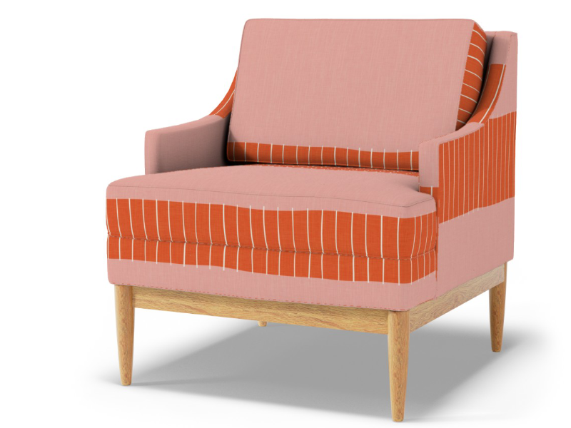
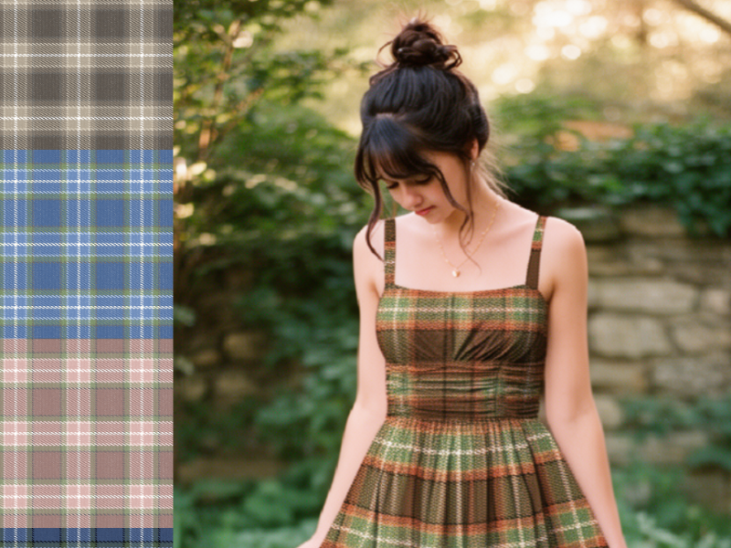

Young Researchers
2015 - 2025

Young Researchers is a children’s educational magazine designed to spark curiosity and analytical thinking in 8-12‑year‑olds. It features STEM‑focused articles, hands‑on activities, colorful infographics, illustrations, and puzzles that guide readers through scientific concepts and creative challenges.
© Virrvarrvilt. All designs are protected and not for reuse or resale.


A new direction I started in summer 2026, designing seamless repeat patterns for fabric, wallpaper and home decor, sold under the label Virrvarrvilt. Some are hand-drawn, some drawn in vector, some built as geometric constructions. Every one is worked into a true repeat, tested at print scale, and designed in a full set of colourways.

Hand-illustrated characters with mix-and-match outfits, accessories, and themed collections. Created as downloadable printables for creative play, featuring unique artistic styles and diverse character designs. Independent product line combining illustration, character design, and interactive paper craft.

Designed playful, visually rich posters for both the Young Researchers magazine and independent educational workshops. Blended bold colors, engaging illustrations, and clear layouts to spark curiosity, invite interaction, and make learning topics feel exciting and accessible.
Educational Games
2015 - 2021

Created fun, interactive board and paper-based games with colorful illustrations and playful layouts for the Young Researchers magazine. Designed to spark curiosity and hands-on learning, the games encourage exploration, problem solving, and collaboration through activities.
Teacher as Researcher
2018 - 2021

Teacher as Researcher is an educational journal empowering teachers with research based insights, practical tools, and inspiring examples. I designed the full publication including layouts, typography, and visual hierarchy, and produced content with original and commissioned illustrations, photography, and infographics. These designs remain in use, giving the journal a consistent, engaging, and accessible look.
Activity Books
2015 - 2020

Interactive workbooks combining hands-on activities with educational content for Young Researchers magazine. Features mazes, coloring pages, cut-out crafts, word puzzles, drawing exercises, and DIY experiments. Designed to extend learning beyond reading through tactile engagement and creative problem-solving.